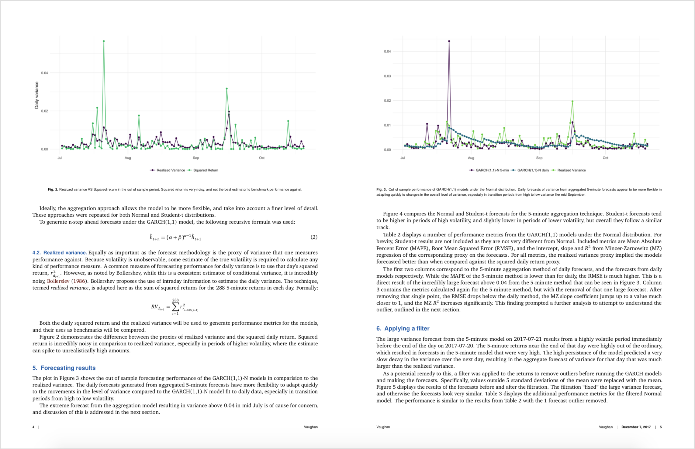
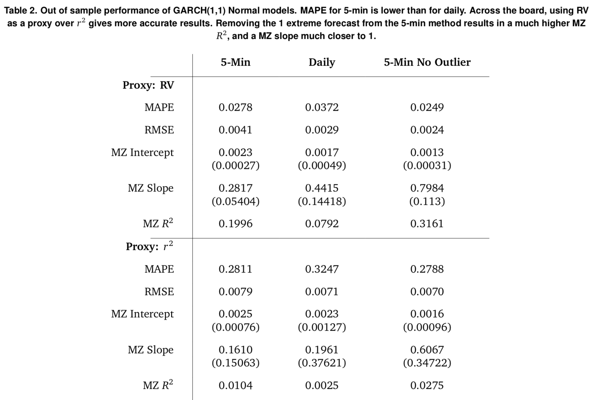
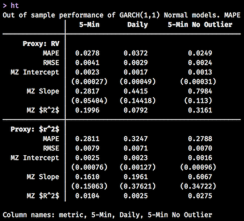

#> # A tibble: 14 × 4
#> metric `5-Min` Daily `5-Min No Outlier`
#> <chr> <dbl> <dbl> <dbl>
#> 1 MAPE 0.0278 0.0372 0.0249
#> 2 RMSE 0.00407 0.00285 0.00244
#> 3 MZ Intercept 0.00226 0.00167 0.00127
#> 4 MZ Intercept Std. Error 0.000271 0.000486 0.000314
#> 5 MZ Slope 0.282 0.441 0.798
#> 6 MZ Slope Std. Error 0.0540 0.144 0.113
#> 7 MZ $R^2$ 0.200 0.0792 0.316
#> 8 MAPE 0.281 0.325 0.279
#> 9 RMSE 0.00788 0.00711 0.00700
#> 10 MZ Intercept 0.00250 0.00232 0.00164
#> 11 MZ Intercept Std. Error 0.000756 0.00127 0.000963
#> 12 MZ Slope 0.161 0.196 0.607
#> 13 MZ Slope Std. Error 0.151 0.376 0.347
#> 14 MZ $R^2$ 0.0104 0.00249 0.0275Intro
This semester I had to write a paper for my Financial Econometrics class. My topic was on analyzing the volatility of Bitcoin using GARCH modeling. I’m not particularly interested in Bitcoin, but with all the recent news around it, and with its highly volatile characteristics, I figured it would be a good candidate for analysis.
I did the analysis in R, but I wanted to take it a step further. Could I write the entire paper in R and RStudio in a fairly professional format? Yes.

I figured I would outline a few issues I had along the way, and talk about the experience for anyone that might do something similar.
Github
If you want to go view the entire paper and analysis, it’s on Github. Check out the repo here. The PDF paper itself is buried here.
If you really want to follow the analysis steps, look in R/ to see the code that generates everything else. Do note that I had to keep the raw data zipped to get it on Github, so to run the data cleaning script, you will have to unzip the file in data/raw/. The paper is written in paper/.
Tooling
To even begin thinking about this, I needed two R packages. One that allowed me to write the post in RMarkdown and render it into a journal style format, and one that created nice looking and customizable tables.
For the first, I initially looked into the rticles package from the RStudio team, which is amazing, but I wasn’t satisfied with the journal styles that they had as options. I then remembered that Dirk Eddelbuettel and James Balamuta had created pinp, or, Pinp Is Not PNAS, as an extension of rticles and in particular the PNAS journal format. This one fit the bill for me, as it provided an uncluttered journal layout with a bit of nice coloring as well.
For the second, there are plenty of options out there for creating LaTeX tables in R, xtable, stargazer, etc. However, I recently had found huxtable and was instantly drawn to its intuitive pipeable syntax for creating tables from data frames. Now that I have a good bit of experience with it, I can say for certain that it is incredibly flexible, and I doubt I’ll ever use another package for table creation.
I was initially pretty worried about how well the two would play together. Sure enough, after rendering a table or two I got errors that (for a non LaTeX expert) seemed faily cryptic. However, it turned out to be a LaTeX package (not R package) dependency problem where huxtable needed packages that pinp didn’t use by default. That was easily fixed by adding the following to the top of the YAML header provided by pinp:
header-includes:
- \usepackage{tabularx,colortbl,multirow,hhline,mathtools}I’ll also add in there that I used the rugarch package for all of my GARCH modeling, and it exceeded my expectations. Its author Alexios has created a fantastic S4 class system that makes trying different versions of GARCH models dead simple.
Huxtable
I really wish huxtable had more publicity. It is a highly underused package for everything that it can do. For example, the following table was created using huxtable. Notice the math symbols in the first column, the fact that the standard errors are closer to the row above them due to smaller margins, and the bolding of certain cells.

The tibble used to create the core table looked like this:
And the R code to generate the table looked like:
library(huxtable)
triple_blank <- function() {
c("", "", "")
}
ht <- hux_data %>%
huxtable() %>%
# Column names
add_colnames() %>%
# Proxy rows
insert_row("Proxy: RV", triple_blank(), after = 1) %>%
insert_row("Proxy: $r^2$", triple_blank(), after = 9) %>%
# Number rounding
set_number_format(everywhere, everywhere, "%5.4f") %>%
# Bold
set_bold(matrix(c(2,10)), 1, TRUE) %>%
set_bold(1, everywhere, TRUE) %>%
# Alignment
set_align(everywhere, everywhere, 'center') %>%
set_align(everywhere, 1, 'right') %>%
# Padding
set_all_padding(value = 10) %>%
set_top_padding(c(6, 8, 14, 16), everywhere, 0) %>%
set_bottom_padding(c(5, 7, 13, 15), everywhere, 0) %>%
set_left_padding(everywhere, 1, -40) %>%
# Borders
set_bottom_border(matrix(c(1, 9)), everywhere, value = .3) %>%
set_right_border(everywhere, 1, .3) %>%
# Escape latex
set_escape_contents(everywhere, 1, FALSE) %>%
set_escape_contents(1, everywhere, FALSE) %>%
set_caption("Out of sample performance of GARCH(1,1) Normal models. MAPE for 5-min is lower than for daily. Across the board, using RV as a proxy over $r^2$ gives more accurate results. Removing the 1 extreme forecast from the 5-min method results in a much higher MZ $R^2$, and a MZ slope much closer to 1.")
ht[1,1] <- ""
htYou even get to view your table in the console without knitting the document to check that you put lines / bolding / even coloring in the right place. This saves more time than you might think!

I find the pipeable syntax very intuitive, and the family of set_*() functions allow for endless combinations. I didn’t even venture into the world of conditional cell formatting, but I hear that that is pretty powerful too.
Adding images
I had created a script in my analysis that generated a number of graphics that I wanted to include in the paper. The pinp vignette is an excellent source of examples for these common use cases, and the following allowed me to embed my images in the paper and add a caption with minimal effort:
\begin{figure*}
\begin{center}
\includegraphics[width=1.00\textwidth, height=8.5in]{../../visualizations/returns}
\end{center}
\caption{Descriptive plots of 5-minute and daily returns}\label{fig}
\end{figure*}Notice the relative path ../../visualizations/returns where I backtrack up two levels from the location of the RMarkdown paper document and then into my visualizations folder. My file structure looked a bit like this:
fin-econ-project/
- fin-econ-project.Rproj
- visualizations/
- returns.png
- paper/
- forecasting-volatility/
- forecasting-volatility.RmdIdeally, I would have set my directory to be the RStudio Project directory so I could have just done visualizations/returns, but pinp and rticles both dump a large number of files into whatever directory you render it from, and I didn’t want that cluttering things up. Perhaps specifying the location of that file dump can be a separate feature?
Adding equations
Adding mathematical equations can be done in two main ways.
As usual, you can add inline math with the use of a dollar sign, then the equation, then end with a dollar sign, it ends up looking like this: \(x + y = z\). Make sure that you don’t leave a space between the dollar signs and the equation, otherwise it doesn’t render and you end up with: $ x + y = z $.
Larger chunks of equations that need their own lines can be specified using two dollar signs on each side:
$$
r_{t_i} = \epsilon_{t_i} \\
\epsilon_{t_i} = \sigma_{t_i} z_{t_i} \\
\sigma_{t_i} = \alpha \epsilon_{t_{i-1}} + \beta \sigma_{t_{i-1}}
$$\[ r_{t_i} = \epsilon_{t_i} \\ \epsilon_{t_i} = \sigma_{t_i} z_{t_i} \\ \sigma_{t_i} = \alpha \epsilon_{t_{i-1}} + \beta \sigma_{t_{i-1}} \]
Unfortunately, this doesn’t align the equations at the equal sign, and I think that that looks pretty nice. To do this, you can add &= instead of just = along with adding \begin{aligned} and \end{aligned} before and after the equation.
$$
\begin{aligned}
r_{t_i} &= \epsilon_{t_i} \\
\epsilon_{t_i} &= \sigma_{t_i} z_{t_i} \\
\sigma_{t_i} &= \alpha \epsilon_{t_{i-1}} + \beta \sigma_{t_{i-1}}
\end{aligned}
$$to get:
\[ \begin{aligned} r_{t_i} &= \epsilon_{t_i} \\ \epsilon_{t_i} &= \sigma_{t_i} z_{t_i} \\ \sigma_{t_i} &= \alpha \epsilon_{t_{i-1}} + \beta \sigma_{t_{i-1}} \end{aligned} \]
Nice!
Overall
For the most part, I enjoyed writing the paper straight from RStudio. Once I figured out a few of the pain points with directory locations, images, equations, and dependencies, the process was pretty smooth. The only other comment I have is that the pinp Knit process is a bit slow. I doubt this has too much to do with the implementation, but more with the underlying rendering engines. I wish there was some way to have Live Rendering like with blogdown so that I could just keep a rendered version of the paper up and have it reload every time I save. That would be the dream!
Update
Thanks to Dirk, the dream has come true.